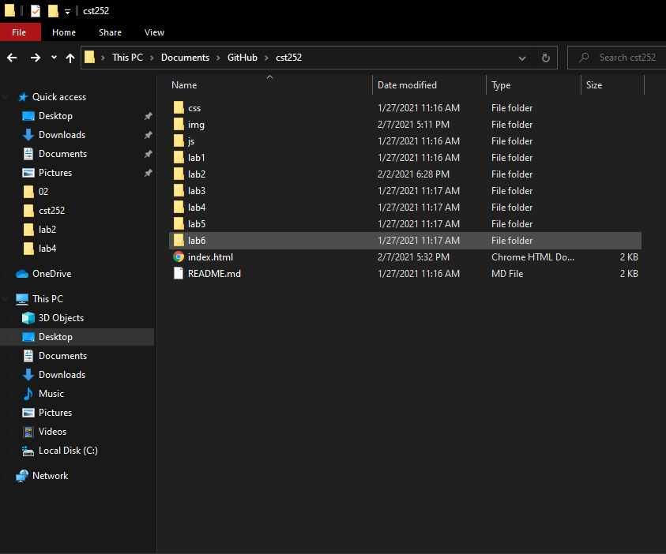

The idea of this was to recall the way file structures work by creating multiple labs connecting to one main folder.
The most difficult part about this assignment was trying to recall all the codes needed so they work properly.
Overall, the lab helped me rejog some lost memories while also being challenged.
